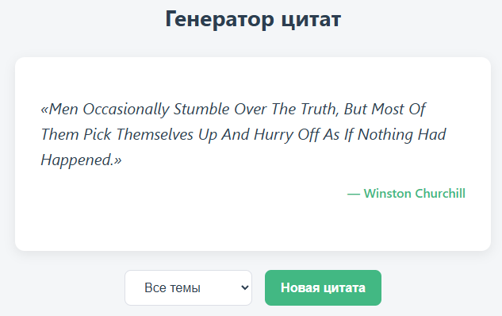

fetch-запрос с https://dummyjson.com/quotes/random при загрузке страницы и по нажатию кнопки «Новая цитата».AbortController при повторных действиях пользователя.Главный компонент управления состоянием, асинхронной загрузкой данных с API и отменой запросов через AbortController
<script setup>
import { ref, onMounted } from 'vue'
import QuoteCard from './components/QuoteCard.vue'
import QuoteControls from './components/QuoteControls.vue'
// Реактивное состояние
const quote = ref(null)
const isLoading = ref(false)
const error = ref(null)
const selectedTag = ref('')
// Контроллер для отмены незавершенного запроса при повторном клике
let abortController = null
const fetchRandomQuote = async () => {
// Отменяем предыдущий запрос, если он еще выполняется
if (abortController) {
abortController.abort()
}
abortController = new AbortController()
isLoading.value = true
error.value = null
try {
// Формируем URL с учетом выбранного тега
const baseUrl = 'https://dummyjson.com/quotes/random'
const url = selectedTag.value
? `${baseUrl}?tags=${encodeURIComponent(selectedTag.value)}`
: baseUrl
const response = await fetch(url, {
signal: abortController.signal
})
// fetch не считает HTTP-ошибки (404, 500) исключением, проверяем вручную
if (!response.ok) {
throw new Error(`Ошибка сервера: ${response.status} ${response.statusText}`)
}
const data = await response.json()
quote.value = data
} catch (err) {
// Игнорируем ошибку, если запрос был отменен намеренно
if (err.name !== 'AbortError') {
error.value = err.message || 'Произошла ошибка сети'
}
} finally {
isLoading.value = false
}
}
// Загружаем цитату сразу после рендера компонента
onMounted(() => {
fetchRandomQuote()
})
</script>
<template>
<main class="app-container">
<h1 class="app-title">Генератор цитат</h1>
<QuoteCard
:quote="quote"
:is-loading="isLoading"
:error="error"
/>
<QuoteControls
v-model:selected-tag="selectedTag"
:is-loading="isLoading"
@fetch-quote="fetchRandomQuote"
/>
</main>
</template>
<style>
body {
margin: 0;
font-family: -apple-system, BlinkMacSystemFont, 'Segoe UI', Roboto, sans-serif;
background-color: #f4f6f8;
color: #2c3e50;
}
.app-container {
max-width: 600px;
margin: 4rem auto;
padding: 0 1rem;
}
.app-title {
text-align: center;
margin-bottom: 2rem;
font-size: 1.75rem;
}
</style>Дочерний компонент для отображения состояния загрузки, сообщений об ошибках, текста цитаты, автора и тегов
<script setup>
defineProps({
quote: {
type: Object,
default: null
},
isLoading: {
type: Boolean,
default: false
},
error: {
type: String,
default: null
}
})
</script>
<template>
<div class="quote-card">
<!-- Состояние загрузки -->
<div v-if="isLoading" class="state-message loading">
Загрузка новой цитаты...
</div>
<!-- Состояние ошибки -->
<div v-else-if="error" class="state-message error">
<p>Не удалось загрузить цитату</p>
<small>{{ error }}</small>
</div>
<!-- Успешное отображение данных -->
<div v-else-if="quote" class="quote-content">
<blockquote class="quote-text">
«{{ quote.quote }}»
</blockquote>
<p class="quote-author">— {{ quote.author }}</p>
<div v-if="quote.tags && quote.tags.length" class="quote-tags">
<span v-for="tag in quote.tags" :key="tag" class="tag">
#{{ tag }}
</span>
</div>
</div>
</div>
</template>
<style scoped>
.quote-card {
background: #ffffff;
border-radius: 12px;
padding: 2rem;
min-height: 180px;
display: flex;
flex-direction: column;
justify-content: center;
box-shadow: 0 4px 15px rgba(0, 0, 0, 0.08);
margin-bottom: 1.5rem;
}
.quote-text {
font-size: 1.25rem;
line-height: 1.6;
color: #2c3e50;
margin: 0 0 1rem 0;
font-style: italic;
}
.quote-author {
font-weight: 600;
color: #42b883;
text-align: right;
margin: 0 0 1rem 0;
}
.quote-tags {
display: flex;
flex-wrap: wrap;
gap: 0.5rem;
}
.tag {
background: #f0f4f8;
color: #5c6b73;
font-size: 0.8rem;
padding: 0.25rem 0.6rem;
border-radius: 6px;
}
.state-message {
text-align: center;
color: #666;
}
.error {
color: #d9534f;
}
</style>Дочерний компонент панели управления с выбором категории (тега) и кнопкой запроса новой цитаты
<script setup>
defineProps({
isLoading: {
type: Boolean,
default: false
},
selectedTag: {
type: String,
default: ''
}
})
const emit = defineEmits(['fetch-quote', 'update:selectedTag'])
const tags = [
{ label: 'Все темы', value: '' },
{ label: 'Технологии', value: 'technology' },
{ label: 'Мудрость', value: 'wisdom' },
{ label: 'Вдохновение', value: 'inspirational' },
{ label: 'Наука', value: 'science' }
]
const onTagChange = (event) => {
emit('update:selectedTag', event.target.value)
emit('fetch-quote')
}
</script>
<template>
<div class="controls">
<select
:value="selectedTag"
@change="onTagChange"
:disabled="isLoading"
class="tag-select"
>
<option v-for="tag in tags" :key="tag.value" :value="tag.value">
{{ tag.label }}
</option>
</select>
<button
@click="emit('fetch-quote')"
:disabled="isLoading"
class="fetch-btn"
>
{{ isLoading ? 'Загрузка...' : 'Новая цитата' }}
</button>
</div>
</template>
<style scoped>
.controls {
display: flex;
gap: 1rem;
justify-content: center;
}
.tag-select,
.fetch-btn {
padding: 0.75rem 1.25rem;
font-size: 1rem;
border-radius: 8px;
border: 1px solid #dcdfe6;
}
.tag-select {
background-color: #fff;
color: #2c3e50;
cursor: pointer;
}
.fetch-btn {
background-color: #42b883;
color: white;
border: none;
font-weight: 600;
cursor: pointer;
transition: background-color 0.2s;
}
.fetch-btn:hover:not(:disabled) {
background-color: #33a06f;
}
.fetch-btn:disabled,
.tag-select:disabled {
opacity: 0.6;
cursor: not-allowed;
}
</style>